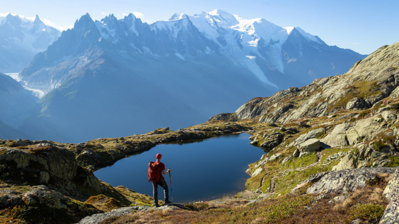
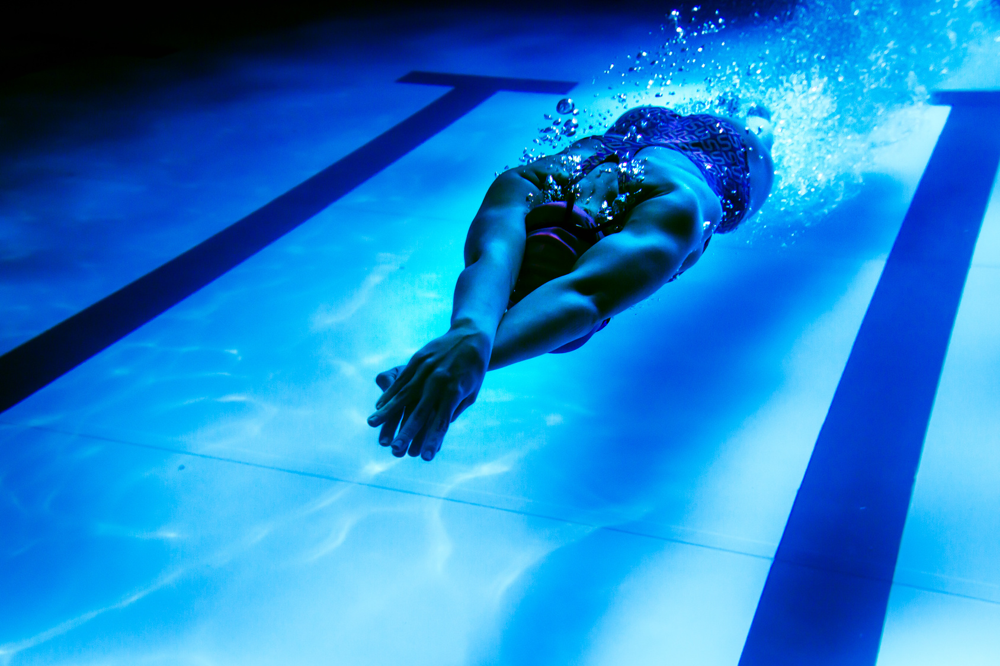

✈️TRAVEL✈️
As Alfred Hitchcock said: Life is not just about breathing, it's about taking your breath away. That's why I like to travel, discover new cultures, meet new people. All of this really makes me feel alive. In addition, it allows me to confront myself with other ways of living and appreciating life and to put my situation into perspective.
Traveling also allows me to relax. I'm a very stressed person by nature, but traveling with the people I love really relaxes me. It allows me to have the feeling that for a moment nothing else matters.
I had the chance to visit dozens of countries around the world thanks to my parents who also share this passion. And I must say that I have a preference for countries with a heavenly landscape. Breathtaking views. But I think that these landscapes are really appreciated only after having deserved them. I explain to myself the fact of hiking to reach a magnificent place will make this place all the more exceptional. But hiking is not the only way this physically and mentally exceeded allows us to really grasp the things we are contemplating. I really like skiing, hiking and swimming, I find that these sports go very well with travel because discovering a place through these sports makes them all the more magical.

Mont Blanc, France
💪🏼MY SPORTY LIFE💪🏼
I tested almost every sport possible and imaginable. Unfortunately for me I am very bad. In my opinion, not all sports that use a ball are made for me. The only sports where I do quite well are those of movement. Let me explain, in my opinion, these are travel sports such as skiing, swimming or other sports such as dance or gymnastics.
IThe sport taught me the competition the relentlessness. That chess was not eternal. And above all to relax and stop thinking, just relax.
Without sport and all its lessons, I certainly wouldn't be the man I am today.

MOVIE
DI am a cinema lover, I can watch dozens of hours of films and series a day. For a long time I even wanted to make it my job. Films allow me to project myself into other lives, they can also raise important questions. As Joseph Bédier says: Cinema is an eye open to the world. I think a lot of life lessons can be learned through the movies. However we must not forget that this is only cinema and that it is often the point of view of a person and that it is better to explore the world through his own eyes.